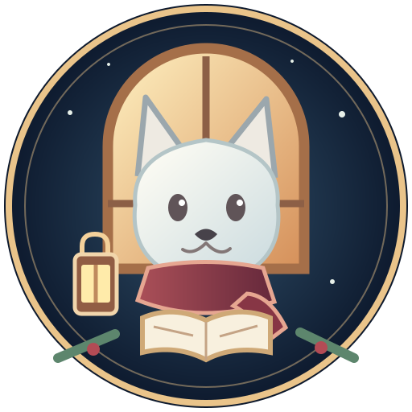

Маячная улица
Фонари, заснеженные дворы и дом «Альбатрос», где все начинается.

ИКФновогодняя история Стать автором ↗Коллективный новогодний ориджинал ИКФ
В одном северном городке есть дом с девяноста девятью квартирами. Но перед Новым годом жильцы получают приглашения из сотой.
У каждого своя история. Но свет один на всех.
Там, где оставляют свет
Небольшой вымышленный североевропейский город на берегу холодного залива. Здесь пахнет кардамоном, хвойным лесом и морским ветром. Зимой сумерки приходят рано, а в окнах зажигают лампы для тех, кто ищет дорогу домой.
Вечером 31 декабря в доме «Альбатрос» гаснет электричество. Вскоре появляются приглашения от квартиры №100, которой нет ни на одном плане. Кто их оставил? Кого в ней ждут? И почему именно сегодня?
Знакомство с первой героиней
Эйра Линдт · квартира №70 · седьмой этаж
«В Люсхольме существовала одна странная традиция. В последний вечер года люди оставляли у окна маленький фонарь. Считалось, что свет означал простую вещь: здесь тебе будут рады».
Эйра Линдт считала, что человечество вообще отлично умело превращать хорошие идеи в декоративные предметы.
Она думала об этом, стоя перед витриной пекарни, пока за ее спиной ветер пытался сорвать с головы вязаную шапку.
— Два кардамоновых узелка, пожалуйста.
— Два? — переспросила пекарша.
— Да.
— К тебе кто-то придет?
Эйра вздохнула.
— Фрида, если я покупаю два узелка, это еще не значит, что у меня гости.
— Значит, собираешься съесть два сама.
— Весьма проницательно.
Пекарша довольно улыбнулась и положила в бумажный пакет третий.
— Этот за мой счет.
— За что?
— За то, что ты сегодня хотя бы разговариваешь с людьми.
Продолжение — в первой главе коллективного ориджинала ИКФ.
Мир, который мы создаем вместе
Фонари, заснеженные дворы и дом «Альбатрос», где все начинается.
Кардамоновые узелки, горячий кофе и разговоры, которые никогда не бывают короткими.
Морской залив, рыбацкие лодки и вечерний паром, идущий домой сквозь снег.
Это только первые места. Авторы могут открывать новые уголки города.
Голоса Люсхольма
Авторы ИКФ создают героев, которые встречаются, ошибаются, помогают друг другу и становятся частью одной новогодней ночи.
Здесь не бывает «слишком поздно» для новой истории. Число участников не ограничено.
Маленькая традиция
В Люсхольме свет в окне означает: здесь тебе будут рады. Выберите любое окно «Альбатроса» или зажгите случайное. Иногда этого достаточно, чтобы чья-то ночь стала немного светлее.
Последний конверт
Разгадка будет ждать вас в заключительной главе. А пока у нас есть время познакомиться с теми, кто однажды решился открыть соседу дверь.
✦ Сюрприз еще не опубликован. Мы бережем его до праздника.
И для вашей истории найдется окно
Придумайте героя, напишите одну главу и станьте частью новогоднего ориджинала ИКФ. Опыт не важен. Главное — желание поделиться доброй историей.
Присоединиться к авторам ↗ Без ограничения числа авторов · Без конкурса · С указанием авторства